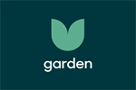

Zendesk Garden
Building products for better customer relationships is complicated, but crafting beautifully simple web components doesn’t
have to be. Welcome to our curated collection of UI goodness, the Zendesk Garden. The Garden is where we grow
user interface components for Zendesk products.
Come in and have a look around, you’ll find components built to respond to a range of user input devices, tuned to handle
right-to-left layouts, and finessed with just the right touch of subtle animation. Bite-sized chunks of web HTML,
CSS, and JavaScript are prepared to drop into any React-based application.
Read the latest from the team
-
There’s a new shape in town by Ginny Wood
Zendesk Garden design system has a new identity, from our in-house Brand team
- React containers, some assembly required by Ryan Seddon
- So you want to grow a design system by Jonathan Zempel
- Design system resources by Vedran Arnautovic
- Designing for inclusivity: How and why to get started by Allison Shaw